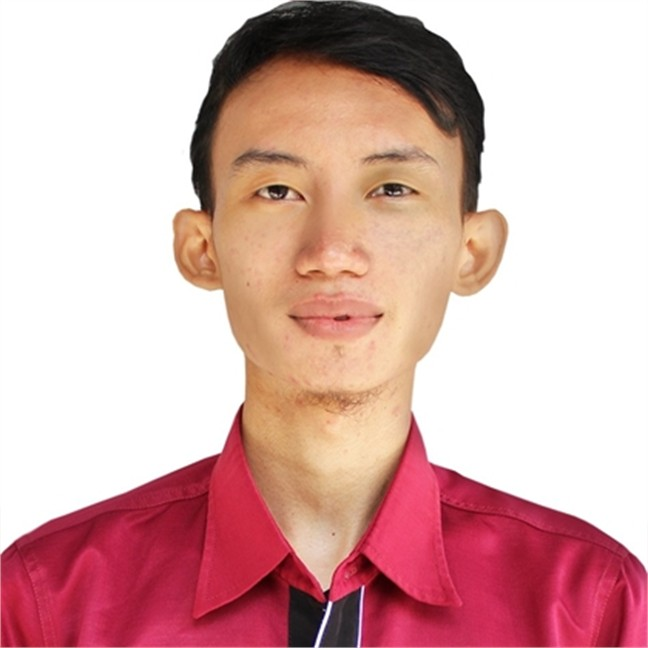

Go, PHP, Python, C/C++, Rust, C#, JavaScript
Event Driven, Domain Driven, Clean Architecture, Microservices
CSS3, HTML5, VueJS, ReactJS, Bootstrap, Tailwind CSS, Vuex
Laravel, Django, Gin, Laminas, Node.js
AWS, AWS S3, MinIO S3, Azure, Kubernetes, Podman, Docker, Containerize, ArgoCD, Jenkins, GitHub, GitLab, GitLab CI/CD
MongoDB, CockcroachDB, OracleDB, MySQL, PostgreSQL + (Vector Database, PostGIS)
RabbitMQ, Kafka
RAG, Vectorize Data, OpenCV, LangChain, YOLOv8
Continous Learning, Teamwork, Problem Solving, Time Management, Creativity
PDF/XLS/DOC/PPT extraction, structured data conversion, text optimization for low-resource search
TF/IDF, reverse frequency, fuzzy matching, terminology expansion, weighted search algorithms
Loki (logs), Tempo (tracing), Mimir (metrics), OpenTelemetry, NSQ, Fasthttp
WebSocket implementation, status monitoring, event-driven architectures
Fasthttp, Redis distributed locking, asynchronous processing, queue-based architectures
January 2023 - September 2023
January 2020 - January 2023
Maret 2013 - Desember 2019